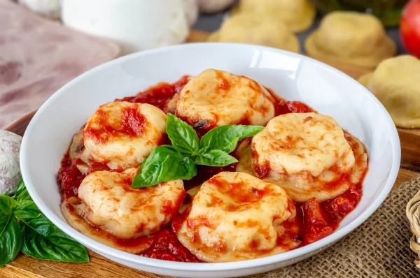

Los Sorrentinos
Hace tiempo venía postergando la lectura de este libro, corto pero rico, sobre el origen de lo que hoy conocemos como Sorrentinos, esa pasta rellena, manjar de los Dioses.

Si bien el título del libro de Virginia Higa lo hace parecer más a un libro de cocina o sobre la historia de los Sorrentinos en sí sino sobre la familia de Sorrento, los Vespoli, que termina en la ciudad de Mar del Plata dónde en la Trattoria Napolitana, inventan tanto la pasta rellena como la forma en que se debe comer, pasando por la cantidad justa de unidades por plato, la forma y la salsa que la acompaña. Una cosa es clave, los Sorrentinos son de mozzarella y jamón cocido; todo lo demás es basofia anti italiana. Los Sorrentinos están patentados como “Sorrentinos Don Umberto” en honor a Umberto Vespoli.
El libro cuenta la vida de los Vespoli, desde el antes, el durante y el despúes; los que estuvieron, los que están y los que ya no están, y todo lo que pasó en el medio. Clásica historia de tanos, con peleas, discusiones, insultos, risas pero, sobre todo, mucha familia.
Comprar Los Sorrentinos en Amazon
-Tan boluda no era- dijo Chiche al escuchar el relato de su hermana.
Ciao!